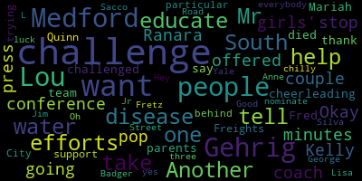

[McGlynn]: Okay, I'm going to stop the press conference here for just a couple of minutes and tell you about a challenge that I was just offered by Kelly Ranara-South, who was the pop water coach of the girls' cheerleading team. And one of the parents was Fred Mariah, who died of Lou Gehrig's disease. She has challenged me to take the Lou Gehrig's water challenge. So before we do that, I want to say that we want to thank and we want to tell Mr. Freights and Mr. Quinn that we support all of their efforts and what they're trying to do to help educate people on this particular challenge. City of Medford is behind everybody in the efforts to help educate people about Lou Gehrig's disease. Hey, Lisa was also in the challenge. I was in the challenge. Oh, yes. I want to nominate three people to take the challenge. One is Anne Fretz from South Medford. Another is Jim Silva from Yale Street. And another is George L. Sacco Jr. from Badger Road in Medford. Good luck. It's chilly.
|
total time: 1.42 minutes total words: 181  |
|||
{kind=link}